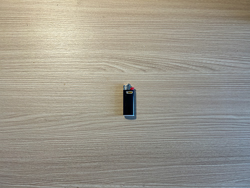
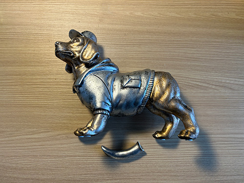
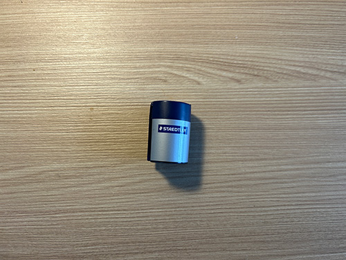
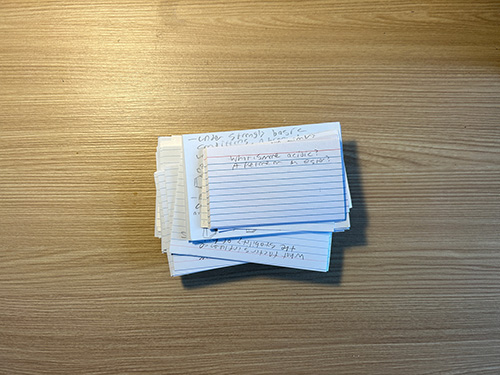
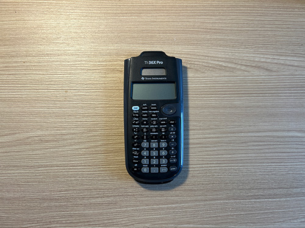
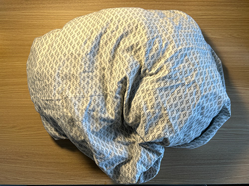
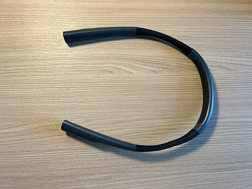
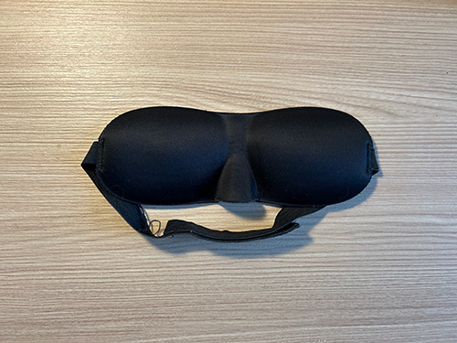

Week 4 – Growing Pains
Throwing out your trash? Who cares? - A Preface
Everybody makes trash: so, who cares about mine? I started this project for two reasons. As a way for me to be more mindful and conscious of the trash I produce and to serve as a diary, for myself and for others. Throughout my life, the amount of trash I, myself, produce has never been of much thought; I use objects, they stop working, or I stop needing them, and then I throw them out. As I grow and strive to become more conscious of the impact I have in our world, I wanted to take on a project that would make me aware of these processes I previously ignored. In sharing my trash every week, I hope that I’ll think twice about buying something I may not need, and also consider if an object I’m throwing out could be repurposed. Through these actions, I believe I can begin to play a small role in the fight against the environmental decline our planet is currently facing.
I also wanted a project that could serve as a diary, or an archive, for myself. In our fast paced, modern world, it’s easy for us to lose track of time, and ourselves. By sharing my trash every week, I give myself the opportunity to catch my breath and reflect on what is going on in my life. You can tell a lot about someone from their trash, so I hope in the future I can look back on these entries and remember who I was, at multiple points in my life.
This Week’s Trash – An Overview
While the ground outside has disappeared from view during this cold, snowy week I am finally beginning to see the floor of my apartment. After a busy first week back at university, I was able to find sometime over the weekend to begin to unpack all of the boxes and bags I moved with into my apartment. Among these bags were some much needed essentials--a hand towel, a desk lamp, dish soap—but these hastily packed bags also harbored many unneeded or broken items. With limited space afforded to me in my student apartment, and with the goal of being able to walk in a straight line through my room, without jumping over any bags or boxes, I must part with some of these items.
Grandma’s Gifts
The first set of items that I will be throwing away are things that my grandma gave me for my apartment. These items were given to me with good intentions, however some of them are either no longer working or not useful to me, therefore taking up valuable space.
The first item is a small Bic lighter. The lighter is black and no larger than my thumb. It has a silver top and a red lever to press to release the gas. This would be a good item to have if I ever wanted to light a candle or start my stove in a power outage (though my stove is electric), but it is empty, and will not be able to light anything in the future.
The second item is what I assume may be a cookie jar. The jar is large and circular. It is made of a clear plastic material and has a sealable, aluminum lid on top. This item is still functional, but it is large and takes up a lot of space within my kitchen; space I do not have. Any cookies I bake after donating this item will have to be eaten immediately.
The last item from my grandmother that I will be disposing of is an interesting metal dog statue. This is a silver and bronze metallic statue about the length of two fists. The dog that the statue depicts is dressed, wearing a hooded sweatshirt and a hat. While moving my bags in I must have damaged the statue, as the tail is broken off. I would glue the tail back on, but I have no room to put it even if it was fixed, so I will be throwing it away.
School Supplies
During my first week of the semester, I also discovered some items that had served me well in previous semesters. Many of them, I hope, will continue to guide me through my classes this spring. Unfortunately, I found that some of them are no longer working. There are three non-functional school supplies that I will be disposing of this week.
The first among these items is a pencil sharpener. I have had this pencil sharpener since I was in high school when I purchased it from an office supplies store. Now, in my third year of university, the blades have effectively dulled to the point where it no longer sharpens pencils. The sharpener is light-weight, circular, and grey and navy in color. It has two openings to sharpen pencils, and these openings feed into a container that collects the pencil shavings.
The second item is a pile of flashcards I made last semester for my organic chemistry class. I have passed the class and so I no longer need them to study. The cards are white, with blue strips running horizontally across them. At the top of all the blue stripes, this is a red stripe. The cards are rectangular and are covered in my terrible handwriting.
The third item is the one I am most upset about. It is a Texas Instruments calculator I purchased by freshman year of college. I was hoping this would last much longer, but after numerous battery changes and other troubleshooting, it seems that it has stopped working completely. The calculator itself is a dark grey, with a small rectangular screen to view the calculations. There is a smaller panel above the main screen for solar charging. The calculator has a number of buttons in rows and columns for computing calculations. There are buttons that are dark grey, grey, and light blue.
Torn and Tired
The last set of items that I will be disposing of are items that I used while I was sleeping, or before I went to sleep. Like many of the previous objects, the items in the set are mainly being disposed of because they are no longer functional.
The first item in this set is an old sheet that I suppose my family has had for a while. I grabbed it out of a closet while I was packing my bags, so that I could have a set of sheets to spare. The sheet is white, with a circular grey pattern. It is large enough to fit a full or twin sized bed. It also has multiple rips and holes throughout it. I only noticed these holes when unpacking the sheet. I am no sewing expert, so I will be disposing of the sheet.
The second item is a reading light that wraps around your neck. I used this item frequently before going to bed, so that I could read without having to have all the lights on in my room. I purchased this item a few years ago. The light is dark grey and made out of a plastic material. It is in a c shape with bendable arms that extend forwards. There are lights on the end of each arm. There are buttons on the side of these arms to turn the lights on and off and control the level of brightness.
The last item I will be throwing away this week is an eye mask that blocks out light while sleeping. I got this item a few months ago. It was given to me for free on a plane I was traveling on. The mask is black and has a Velcro band behind it to wrap around the head. There is a protruding bump in the front of the mask, for the nose. As an item that was given out for free in economy on a flight, it is not the highest quality. I have decided to purchase a new eye mask, that is more comfortable for me to wear while sleeping.
Photo Evidence - The Gallery
Bic lighter

Cookie Jar?
Dog Statue
Pencil Sharpener
Flash Cards
Calculator
Ripped Sheet
Reading Light
Sleep Mask
Looking Ahead - A Coda
With these items thrown out, I am beginning to see my floor again. Next week, I’ll continue to unpack and clean up my apartment. I hope you were able to learn a little about me and I thank all readers for tolerating my rather boring week of unpacking.
Thanks, and I hope you come back again to see what I dispose of next!